Introduction
The Social Pressure Experiment
$$ \newcommand{X}{} \newcommand{Y}{} % A hex digit after # inside a macro body is eaten by build-time expansion, so digit-leading hexes spell # via .
$$
- In 2006, Gerber, Green, and Larimer ran an experiment in Michigan.
- They wanted to see what kinds of messages would get people to vote in the primary.
- So they wrote five letters exercising increasing levels of social pressure.
- No letter. This one was easier to write and cheaper to mail. Let’s still count it as ‘a letter’.
- A letter saying it was your civic duty to vote. ?@fig-civic-duty-letter
- A letter saying that your vote is public record. ?@fig-public-record-letter
- A letter saying that they’d be watching to see if you voted. ?@fig-watched-letter
- A letter saying that they’d tell your neighbors whether you voted. ?@fig-neighbors-letter
- This one was pretty intense. It included a list of your neighbors.
- And it told you whether they’d voted in the last couple elections.
Starting with the complete list of registered voters in Michigan …
- They randomly selected 180,000 households to include in their experiment.
- They randomly assigned each of these households one of five letters.
- They mailed the letters 11 days before the primary.
- Then they checked to see who voted.
- We have that data. We’re looking at some of it.
- We’re looking at the people in the households sent either no letter or the neighbors letter.
- We’ve got a dot for each one— 229444 dots in all.
Each person is a dot.
- Their current age determines where it is on the x-axis.
- It’s a ▲ if they voted in the 2002 primary and a ● if they didn’t.
- It’s green if they got the neighbors letter and red if they got no letter.
- Its location on the y-axis indicates whether they voted in the 2006 primary.
- Yeses in the top row; nos on the bottom.
A Missed Opportunity?

- Let’s say you work on some candidate’s campaign and they lost by a small margin.
- You heard about this experiment and you want to know whether you might have won …
- … if you’d sent out a high-pressure letter, e.g. the neighbors letter.
- Obviously you would …
- only send it to people you’re confident would vote for your candidate.
- do it anonymously, so it wouldn’t influence how people voted. Hopefully.
- You want to work out many additional votes you’d have gotten if you’d done it.
Your Imaginary Mailer Campaign

- Let’s suppose people aged 25-35 are extremely likely to vote for your candidate.
- Let’s say every one of them votes for your candidate every time they vote.
- The problem is that many of them don’t vote in mid-term primaries.
- You know how many of them actually voted. It’s public record.
- What you want to know is how many of them would have voted if they’d gotten the neighbors letter.
- That difference is the number of votes you’d have gotten from your imaginary mailer campaign.
Step 1a. Individual-Level Prediction


- Let’s start small. Let’s try to predict turnout for one person at a time.
- We get out our list of voters aged 25-35 and look at the first two.
| Name | Age | Voted 2002 | Voted 2006 | if sent letter |
|---|---|---|---|---|
| Rush Hoogendyk | 27 | ▲ Yes | No | ? |
| Mitt DeVos | 31 | ● No | No | ? |
- How do you think Rush and Mitt would have voted if they’d gotten the neighbors letter? Use the plot.
- Hint. What information do you have to help you guess?
- My guess is that neither would have voted. Letter or no, very few people did.
- To be more precise, let’s take a look the people who got the letter features matching Rush and Mitt.
- Rush-types are ▲s in the x=27 column. 23/70 voted. 33%.
- Mitt-types are ●s in the x=31 column. 52/169 voted. 31%.
- Looking at rates within-group, which seems better, doesn’t change our conclusion: They probably didn’t.
- Note the percentages above are based all data from the experiment, not just the dots shown. Using only those …
- 3/9 (33%) displayed Rush-types voted.
- 4/12 (33%), displayed Mitt-types voted.
Step 1b. Summarizing Our Predictions


- Now that we’ve worked out how to make predictions for Rush and Mitt, we can do it for everyone in our list.
- That is, we can fill in all the ?s in our table below.
- You made a prediction for each person. I did one more.
| Name | Age | Voted 2002 | Voted 2006 | if sent letter |
|---|---|---|---|---|
| Rush | 27 | ▲ Yes | No | No (33% of Rush-types voted) |
| Mitt | 31 | ● No | No | No (31% of Mitt-types voted) |
| Al | 34 | ● No | No | No (47% of Al-types voted) |
| … | … | … | … | ? |
- This doesn’t quite answer our question.
- We want to know how many votes we’d have gotten if we mailed everyone in this table the letter.
- How can we use the table to find out?
- The obvious thing is to just count up the number of Yeses in the last column.
- It turns out that doesn’t work. We were choosing Yes/No by majority rule.
- But the majority within almost every group is No.
- To illustrate this, let’s draw in the fraction of Yeses within each group as a bigger dot.
- Think of ‘Yes’ as 1 and ‘No’ as 0, so majority rule says ‘No’ if that dot is below the midline.
- For people in our list—the 25-35s—the majority says ‘No’ in almost every group: 21/22.
- We’re still going to count. But this time, we’re not going to think of Rush, Mitt, and Al as 3 Nos.
- We’re going to think of Rush as 33% of a Yes; Mitt as 31% of a Yes; and Al as 47% of a Yes.
- Even though the thing we’re predicting is binary, our prediction is a fraction.
- This sounds a bit odd but the math tends to work out.
- That way, when we count up our predictions for 100 people like Rush, we get 32.86 Yeses. Not zero.
- And when we do it for 70 people like Rush, we get 23.
- 70 is the number of green dots like Rush in the experiment and 23 is the number of Yeses among them.
- Some people call this kind of fractional answer to a Yes/No question probabilitic classification.
- I don’t actually have the list of all voters registered in Michigan in 2006.
- Rush, Mitt, and Al are all made up names with 2006 primary theme.
- So I can’t sum up the number of Yeses in the last column.
- I could make the last column if I had the others, but I don’t.
- This is theoretically something that’s available, but it’s probably hard to get.
- In any case, what I can do is act as if the participants in my experiment were the list of all voters in Michigan.
- They are, after all, randomly selected from that list.
- Then both our predictions and the people whose votes were counting …
- … depend on the random selection of people to participate in our experiment.
- This adds a bit of randomness to our summary, but it’s not a big deal.
\color{gray} \begin{aligned} \text{predicted turnout among 25-35s} =& \ \textcolor{#00BFC4}{30.1\%} && \text{ with the \textcolor{#00BFC4}{neighbors letter}} \\ vs. =& \ \textcolor{#F8766D}{24.3\%} && \text{ with \textcolor{#F8766D}{no letter}} \end{aligned}
Even just counting the 25-35s in the experiment, that’s 29008 \times 0.057 \approx 1667 more votes.
What do you make of this?
Step 2. Inference







- This summary of our predictions suggests that the letter makes a big difference. That, itself, is not interesting.
- We can call it as an estimate of what we want to know.
- But I can make up any number and call it an estimate.
- What would be interesting is to know that estimate is accurate.
- i.e. if the letter actually improved that age-group’s turnout from about 24% to about 30%.
- e.g. if we knew that the actual with-letter turnout was the green line, not the red one
- perhaps we could say that it’s within some range.
- What’s real here is complicated.
- We’re asking about what would have happened if we’d done something we didn’t do.
- Let’s put that aside for a moment. We’ll come back to it.
- We’ve danced around a lot of terminology here. See Slide 4 for that.
- This summary of our predictions suggests that the letter makes a big difference. That, itself, is not interesting.
- We can call it as an estimate of what we want to know.
- But I can make up any number and call it an estimate.
- What would be interesting is to know that estimate is accurate.
- i.e. if the letter actually improved that age-group’s turnout from about 24% to about 30%.
- e.g. if we knew that the actual with-letter turnout was the green line, not the red one
- perhaps we could say that it’s within some range.
- What’s real here is complicated.
- We’re asking about what would have happened if we’d done something we didn’t do.
- Let’s put that aside for a moment. We’ll come back to it.
- We’ll be dancing around a lot of terminology here. See Slide 4 for that.
- Let’s imagine that we really did mail the letter to every voter in Michigan.
- And the data we’ve used for our predictions, the green dots in Figure 1, is just a random sample of voters.
- Like if we’d chosen them by rolling a really big die, with a side for each voter, 38201 times.
- If that were the case, we’d be dealing with a statistical inference problem.
- We’d want to know how the turnout rate we’ve estimated using our sample compares to the rate in the population.
- If we’ve drawn a range — an interval estimate — we’d want to know whether the population rate is in there.
- There is, of course, an element of chance. Our sample is random.
- But we might ask how often we’d get an interval that contains the population rate if …
- … we drew samples of 38201 voters the same way, over and over,
- … each time rolling our die 38201 times to select 38201 people
- … from our list of all Michigan voters, each of whom — in our imagination — got the letter.
- What we’d be doing is thinking of our estimate as the result of a procedure we could apply to any sample.
- Our estimate is a function of the sample we have. Apply the procedure, get a number.
- If we applied that procedure to 100 different samples, we’d get 100 different numbers. Like our purple dots (●s).
- We don’t have a bunch of samples like the ones we’d want. We’d have to time-travel to 2006 and mail letters.
- But it turns out we can fake it well enough to get by. That’s how we got the ●s.
- How do we do it? We’ll see in a couple weeks.
- This gives you a sense of how much of your error is a matter of chance.
- What it says is that, sampling then applying your procedure, you’d have been just as likely …
- … to have gotten any of those ●s as the ● that you did.
- If your conclusions depend on which dot you got, you probably shouldn’t trust them.
- If you want to have a better sense of all the possibilities, you could draw more purple dots.
- A billion, even. But your picture would be pretty cluttered. It’d be hard to see much of anything.
- What I’ve done instead is draw something that tells us how many of these billion dots fall into any given range.
- We call this the distribution of the purple dots.
- The fraction of its shaded area that falls between x=a and x=b is the fraction of dots that do.
- Or, if we prefer, the probability that a randomly chosen dot falls between x=a and x=b.
- This tells us where our estimates tend to be, but not how far they are from what we’re trying to estimate.
- To read that off the plot, we’d need to draw in the rate in the population.
- And we don’t know that. If we did, we wouldn’t be doing this.
- This is where math comes in. What we’ll do is prove this distribution is exactly where we want it.
- Not the ‘fake’ one we’re drawing. The actual one.
- The distribution of dots we’d get if we’d mailed 38201 letters in Michigan a billion times.
- This isn’t true of all estimators, but it is of the one we’re using here. We call these ones unbiased.
- What should we make of this visualization—the ‘fake’ distribution?
- It turns out that it has about the same shape as the real one. You’ll have to take my word for it, at least for now.
- As a result, even though we won’t know where the real one is, we know that …
- wherever it is, it’s where we want it to be. It’s centered on the population rate we want to know.
- it’s about as narrow as the one we’ve drawn.
- If you twist that just right, we can make a meaningful claim about where that center is.
- What we do is take advantage of the fact that we have one sample (●) from the real thing.
- And if more or less all samples from the real thing are close to its center, i.e., the distribution is narrow …
- … then, turning that around, that center has to be pretty close to the sample we do have.
- The interval estimate I’ve drawn is actually calibrated using this idea.
- Its width is chosen so that, unless the ● is an unusually off-center draw from the real distribution …
- The interval itself contains the distribution’s center.
- And therefore the rate in the population we were trying to estimate.
- In particular, if I were to make a billion interval estimates using the same approach …
- … 95% of them would contain what I intended to estimate.
- This doesn’t tell you what’s true in any one instance.
- If you’re not actually going to look at the whole population, you have to accept some uncertainty.
- What it does is tell you about me and the methods I’m using.
- It tells you that, if I do a lot of work for you …
- .. you can trust the intervals I give you to be right 95% of the time.
Practice working with Distribution Plots
How many of the ●s are estimates of at least 30%? What about 29%?
- You could count the slow way—dot by dot.
- Can you think of a faster way?
Step 3. Causality

Now let’s come back to the issue we put aside.
We’ve been talking as if we’d mailed the letter to every voter in Michigan.
And we were using a random sample of them to make our predictions.
That’s not what happened. GGL didn’t even mail the letter to every voter selected for their experiment.
What they did was …
- They randomly selected 180,000 households to include in their experiment.
- They randomly assigned each of these households one of five letters.
Does the sample of ●s we got look like one we’d get if we’d mailed the letter to everyone?
Is it similar enough that we can get away with pretending that it is? Let’s talk about it.
Next class, we’re going to start using some math to think about sampling. We’ll get some answers then.